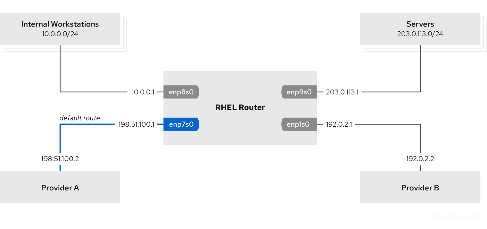

Routing traffic from a specific subnet to a different default gateway by using nmcli
-
The system uses
NetworkManagerto configure the network, which is the default. -
The RHEL router you want to set up in the procedure has four network interfaces:
-
The
enp7s0interface is connected to the network of provider A. The gateway IP in the provider’s network is198.51.100.2, and the network uses a/30network mask. -
The
enp1s0interface is connected to the network of provider B. The gateway IP in the provider’s network is192.0.2.2, and the network uses a/30network mask. -
The
enp8s0interface is connected to the10.0.0.0/24subnet with internal workstations. -
The
enp9s0interface is connected to the203.0.113.0/24subnet with the company’s servers.
-
-
Hosts in the internal workstations subnet use
10.0.0.1as the default gateway. In the procedure, you assign this IP address to theenp8s0network interface of the router. -
Hosts in the server subnet use
203.0.113.1as the default gateway. In the procedure, you assign this IP address to theenp9s0network interface of the router. -
The
firewalldservice is enabled and active.
You can use policy-based routing to configure a different default gateway for traffic from certain subnets.
For example, you can configure RHEL as a router that, by default, routes all traffic to internet provider A using the default route. However, traffic received from the internal workstations subnet is routed to provider B.
The procedure assumes the following network topology:

-
On a RHEL host in the internal workstation subnet:
-
Install the
traceroutepackage:# dnf install traceroute -
Use the
tracerouteutility to display the route to a host on the internet:# traceroute redhat.com traceroute to redhat.com (209.132.183.105), 30 hops max, 60 byte packets 1 10.0.0.1 (10.0.0.1) 0.337 ms 0.260 ms 0.223 ms 2 192.0.2.2 (192.0.2.2) 0.884 ms 1.066 ms 1.248 ms ...The output of the command displays that the router sends packets over
192.0.2.1, which is the network of provider B.
-
-
On a RHEL host in the server subnet:
-
Install the
traceroutepackage:# dnf install traceroute -
Use the
tracerouteutility to display the route to a host on the internet:# traceroute redhat.com traceroute to redhat.com (209.132.183.105), 30 hops max, 60 byte packets 1 203.0.113.1 (203.0.113.1) 2.179 ms 2.073 ms 1.944 ms 2 198.51.100.2 (198.51.100.2) 1.868 ms 1.798 ms 1.549 ms ...The output of the command displays that the router sends packets over
198.51.100.2, which is the network of provider A.
-
On the RHEL router:
-
Display the rule list:
# ip rule list 0: from all lookup local 5: from 10.0.0.0/24 lookup 5000 32766: from all lookup main 32767: from all lookup defaultBy default, RHEL contains rules for the tables
local,main, anddefault. -
Display the routes in table
5000:# ip route list table 5000 0.0.0.0/0 via 192.0.2.2 dev enp1s0 proto static metric 100 10.0.0.0/24 dev enp8s0 proto static scope link src 192.0.2.1 metric 102 -
Display the interfaces and firewall zones:
# firewall-cmd --get-active-zones external interfaces: enp1s0 enp7s0 trusted interfaces: enp8s0 enp9s0 -
Verify that the
externalzone has masquerading enabled:# firewall-cmd --info-zone=external external (active) target: default icmp-block-inversion: no interfaces: enp1s0 enp7s0 sources: services: ssh ports: protocols: masquerade: yes ...